DefiniciónÁngulo. Es la abertura comprendida entre 2 semirrectas que tienen un punto en común, llamado vértice, las semirrectas reciben el nombre de lados del ángulo.
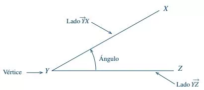
Nomenclatura de ángulosLa notación de un ángulo puede ser gráfica o simbólica.
Gráficamente se indica con un par de semirrectas unidas en un punto común y un pequeño arco entre ellas. Hay tres formas:
a) Una letra mayúscula situada en el vértice.
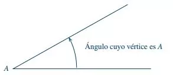
b) Una letra minúscula dentro del ángulo; generalmente se emplea una letra del alfabeto griego.
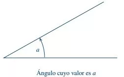
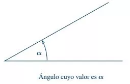
c) Tres letras mayúsculas.
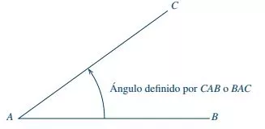
Simbólicamente. La notación se realiza anteponiendo a una letra el símbolo \(\sphericalangle \), o bien, colocando un pequeño ángulo sobre la letra. Cuando usas letras del alfabeto griego para denotar ángulos, puedes prescindir del símbolo \(\sphericalangle \).
\(\sphericalangle z\) se lee ángulo z
\(\hat{a}\) se lee, ángulo a.
\(\sphericalangle \theta \) se lee ángulo theta
\(\hat{\alpha }\) se lee ángulo alfa
Si la notación se hace con las letras del ángulo, tenemos que:
\(\displaystyle \widehat{CAB}\) se lee ángulo CAB
Generación de los ángulosUn ángulo se considera generado por dos semirrectas, de las cuales una permanece fija y la otra gira alrededor de un punto fijo de la primera semirrecta (vértice del ángulo).
Si el giro es contrario al giro de las manecillas del reloj, el ángulo es positivo.
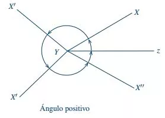
Si el giro es en el mismo sentido que la manecillas del reloj, el ángulo es negativo.
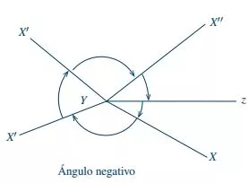
Clasificación
A) Según sus medidas
AgudoEs todo ángulo cuya medida está comprendida entre 0° y 90°, es decir, menor que un ángulo recto (90°).
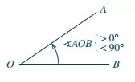
RectoEs aquel ángulo cuya medida es 90°, por lo tanto, es la mitad de un ángulo llano (180°).
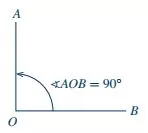
ObtusoEs todo ángulo cuya medida es mayor que un ángulo recto (90°), y menor que un ángulo llano (180°), es decir, su medida está comprendida entre 90° y 180°.
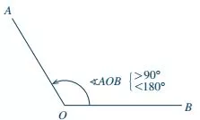
LlanoEs aquel ángulo cuya medida es 180°.
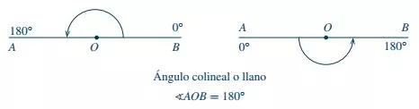
Ángulo entranteEs todo ángulo cuya medida es mayor que un ángulo llano (180°), y menor que un ángulo perigonal (360°), es decir, su medida está comprendida entre 180° y 360°.
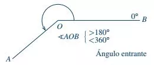
Ángulo perigonalEs el ángulo en el que uno de sus lados coincide con el otro formando un arco de una circunferencia, cuyo valor es 360°.
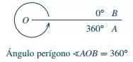
B) Según la posición de sus lados
Ángulos consecutivosDos ángulos son consecutivos cuando tienen un lado en común y el mismo vértice. Varios ángulos son consecutivos si el primero es consecutivo del segundo, éste del tercero y así sucesivamente.
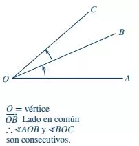
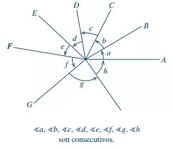
Ángulos opuestos por el vérticeSe dice que dos ángulos son opuestos por el vértice cuando los lados de uno de ellos son las prolongaciones de los lados del otro. Por consecuencia, los ángulos opuestos por el vértice son iguales entre sí, es decir, son ángulos congruentes.
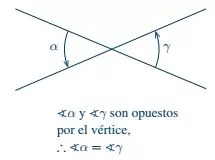
Ángulos adyacentesDos ángulos son adyacentes cuando son consecutivos, es decir tienen un lado en común y los dos lados no comunes son semirrectas opuestas; los ángulos adyacentes forman un ángulo colineal o llano (180°); por consecuencia los ángulos adyacentes son ángulos suplementarios.
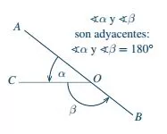
C) Según la suma de sus medidas
Ángulos complementariosDos ángulos son complementarios cuando su suma vale 90°, es decir, cuando forman un ángulo recto.
Complemento de un ángulo. El complemento de un ángulo es igual a la diferencia entre 90° y el ángulo propuesto, ya que \(\sphericalangle \alpha +\sphericalangle \beta =90\unicode{xb0} \).
El ángulo \(\alpha\) es complemento del ángulo \(\beta\) y viceversa.
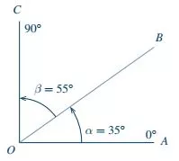
Ángulos suplementariosDos ángulos son suplementarios cuando su suma vale 180°, es decir, cuando forman un ángulo colineal o llano.
Suplemento de un ángulo. El suplemento de un ángulo es igual a la diferencia entre 180° y el ángulo propuesto, ya que \(\sphericalangle \alpha +\sphericalangle \beta =180\unicode{xb0} \).
El ángulo \(\alpha\) es suplemento del ángulo \(\beta\) y viceversa.
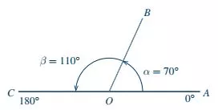
Ángulos conjugadosDos ángulos son conjugados cuando su suma vale 360°, es decir, cuando forman un ángulo perígonal.
Conjugado de un ángulo. El conjugado de un ángulo es igual a la diferencia entre 360° y el ángulo propuesto, ya que \(\sphericalangle \alpha +\sphericalangle \beta =360\unicode{xb0} \).
El ángulo \(\alpha \) es conjugado del ángulo \(\beta\) y viceversa.
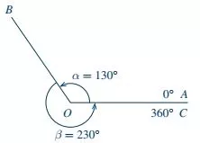
Ejemplo 1. De acuerdo con los distintos criterios de clasificación de los ángulos, describe qué tipos de ángulos son los siguientes:
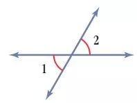
Respuestas:
\(\sphericalangle 1\) y \(\sphericalangle 2\) opuestos por el vértice; agudos.
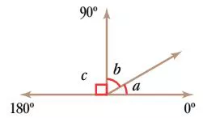
Respuestas:
\(\sphericalangle a\), \(\sphericalangle b\) y \(\sphericalangle c\) son adyacentes.
\(\sphericalangle a\) y \(\sphericalangle b\) agudos y complementarios.
\(\sphericalangle c\) recto.
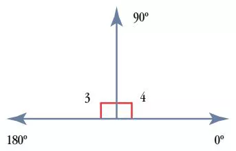
Respuestas:
\(\sphericalangle 3\) y \(\sphericalangle 4\) cada uno es recto; ambos son suplementarios y adyacentes.
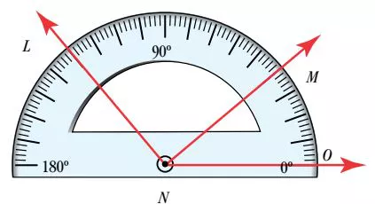
Respuestas:
\(\sphericalangle LNO\) obtuso; (mide 130°)
\(\sphericalangle MNO\) agudo; (mide 40°)
\(\sphericalangle LNM\) recto; (mide 130° - 40° = 90°)
Ejemplo 2. Explica por qué:
a) \(\sphericalangle a\) y \(\sphericalangle b\) no son opuestos por el vértice.
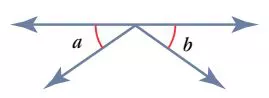
Respuesta: Sólo tienen un par de lados opuestos.
b) \(\sphericalangle \alpha\) y \(\sphericalangle \beta\) no son adyacentes.
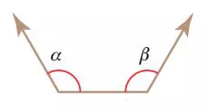
Respuesta: Tienen puntos interiores comunes
c) \(\sphericalangle 1\), \(\sphericalangle 2\) y \(\sphericalangle 3\) no son complementarios.
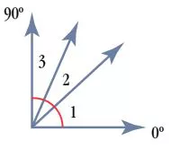
Respuesta: Aunque suman 90°, no son dos ángulos, sino tres.